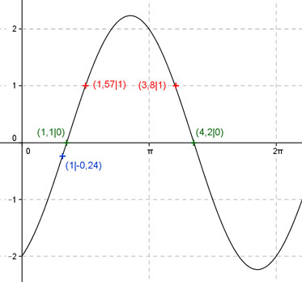
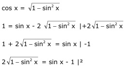
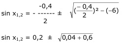

Aufgabe 218 Ergänzen Sie die Wertetabelle für x zwischen 0 und 2π: y = sin x - 2 cos x x 1 1,57 oder 3,8 y -0,24 1 Amplitude = 2,24 (Berechnung siehe unten); Periode = 2π Berechnung der Nullstellen: 0 = sin x - 2 cos x | +2cos x 2 cos x = sin x | :cos x sin x sin x ------- = 2 mit ------- = tan x cos x cos x tan x = 2 --> x = arc tan 2 = 1,1 oder 63° gerundet. x1 = 1,1 oder 63°. x2 = 4,24 (4,2 gerundet) oder 240,6°. Berechnung der Amplitude A: Sie tritt an den Stellen x = 63,4° + (242,9° - 63,4°)/2 = 153,15° oder 2,67 oder bei (153,15° + 180°) = 333,15° oder 5,81 auf. A = f(153,15°, 333,15°) = sin 153,15° - 2 cos 153,15° = = |sin 333,15° - 2 cos 333,15°| = 2,24 gerundet.  Funktionswert an einer Stelle x ermitteln: 1 * 180° x = 1 oder ---------- = 57,3° π y = f(1) = sin 1 - 2 cos 1 = sin 57,3° - 2 cos 57,3° = 0,84 - 2 * 0,54 = -0,24 gerundet. Berechnung der x-Werte für y = f(x) = 1 fx = 1 eingesetzt, existiert zwischen 0 und π bzw. 0° und 180° und zwischen π und 2π bzw. 180° und 360° (siehe Graph). 1 = sin x - 2 cos x  4(1 - sin2 x) = sin2 x - 2 sin x + 1 4 - 4 sin2 x = sin2 x - 2 sin x + 1 | +4sin2 x 4 = 5 sin2 x - 2 sin x + 1 | -4 5 sin2 x -2 sin x - 3 = 0 |:5 sin2 x - 0,4 sin x - 0,6 = 0 p,q - Formel:  sin x1,2 = 0,2 ± 0,8 sin x1 = 1 --> x1 = arc sin 1 = 1,57 = π/2 sin x2 = - 0,6 --> x2 = arc sin - 0,6 = -0,64 Weil zwischendurch quadriert wurde, ist eine Probe nötig. Probe: Für x1: sin 1,57 - 2 cos 1,57 = 1 ? 1 + 2 * 0 = 1 Lösung Für x2: sin - 0,6 - 2 cos - 0,6 = 1 ? -0,64 - 2 * 0,82 = 2,28 keine Lösung Die Funktionswerte liegen gleich weit von der Amplitudenstelle entfernt: x1 = π/2 = 1,57 gerundet oder 90° x2 = 1,57 + 2 * (2,67 - 1,57) = 3,77 (3,8 gerundet) oder 217,7°